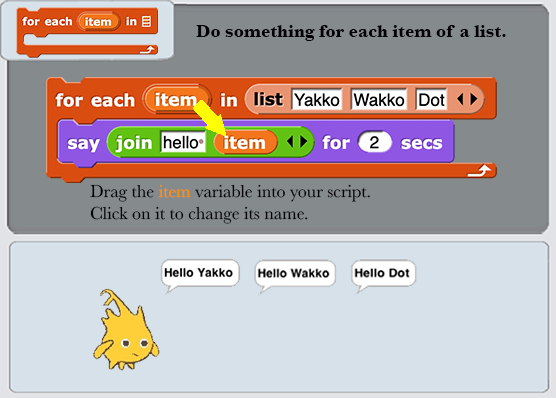

for each in
move steps
turn ↻ degrees
turn ↺ degrees
point in direction
point towards
go to x: y:
go to
Glide Secs to Position
change x by
set x to
change y by
set y to
if on edge, bounce
position
x position
y position
direction
switch to costume
next costume
costume number
say for secs
say
think for secs
think
Attribute of Costume
Stretch Costume
Skew Costume by Degrees
New Costume
change effect by
set effect to
clear graphic effects
_ effect
change size by
Set Sprite Size
size
show
hide
shown?
go to layer
go back layers
Play Sound
Play Sound Until Done
Stop All Sounds
Play Sound Hz
Attribute Of Sound
New Sound Rate Hz
Rest For Beats
Play Note For Beats
Set Instrument
Change Tempo
Set Tempo
Tempo
Change Volume
Set Volume
Volume
Change Balance
Set Balance To
Report Balance
Play Frequency Hz
Stop Frequency
clear
pen down
pen up
pen down?
set pen color to
change pen by
set pen to
pen
change pen size by
set pen size to
stamp
fill
write size
pen trails
paste on
cut from
Color
Color Attribute
new color
When Green Flag Clicked
when is edited
when I start as a clone
when I receive
when key pressed
when
when I am
broadcast
broadcast and wait
Warp
wait secs
wait until
forever
repeat
repeat until
for _ = to
if
if else
if then else
report
stop
run
launch
call
pipe →
tell to
ask for
create a clone of
a new clone of
delete this clone
pause all ⏸
switch to scene
define
delete block
set of block to
Attribute Of Block
this
set slot to
touching ?
color is touching ?
ask and wait
answer
mouse position
mouse x
mouse y
mouse down?
key pressed?
Distance To
Color at Location
reset timer
timer
current
Attribute Of
my
object
url
microphone
video on
set video transparency to
is on?
set to
Command Ring
Reporter Ring
Predicate Ring
+
−
×
÷
Power of Number
Mod
min
max
round
Math Functions
atan2 ÷
pick random to
_
or
not
join
split by
letter of
Attribute of Text
unicode of
unicode as letter
is a ?
is ?
change by
show variable
hide variable
Script variables
inherit
list
numbers from to
In Front Of
item of
all but first of
Report List Attribute
index of in
List Contains
is empty?
map over
keep items from
find first item in
combine using
add to
delete of
insert at of
replace item of with
append
reshape to
combinations
Complete Me

No examples yet.